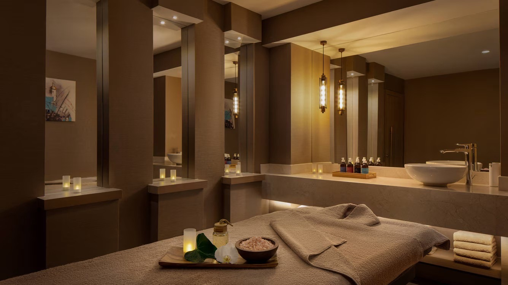

Spa Soul at JW Marriott Istanbul Bosphorus
JW Marriott Istanbul Bosphorus · Beyoğlu · İstanbul
Feel Well
 Hammam
Hammam Classic
Classic Journey
Journey Rituals
RitualsLook Well
 Body
Body Face
FaceMove Well
 Memberships & Activities
Memberships & ActivitiesDiscover Spa Soul, a tranquil oasis within the luxurious JW Marriott Bosphorus. Inspired by opulence and designed for ultimate comfort, this sanctuary invites you to escape the everyday. Nestled in Istanbul's historic Beyoğlu district, the spa offers a world of rejuvenation, from traditional Turkish Hammams to bespoke treatment rooms, each crafted to soothe your mind, body, and soul. Experience a journey of serenity and well-being in a magnificent setting.
Information
Kemankeş Karamustafa Paşa, Kemankeş Caddesi No 49/8
34425 Beyoğlu
İstanbul, Türkiye


What to wear
We will provide you with a robe and slippers to wear. During your treatment, it is recommended that you experience body services with disposable underwear. Our therapists are professionally trained and will ensure a level of comfort by appropriately draping areas of the body that are not a focus of the treatment.
Storing valuables
Please kindly leave valuable personal items in the safe in your hotel room or one of the safe deposit boxes at the front desk of the hotel.
Late arrival time
We request you to check-in at least 15 minutes hour prior to your scheduled appointment; however, if you are unavoidably late, please call to notify the SPA receptionist when possible. Arriving late will simply limit the time for your treatment, as we must complete your service by the designated end-time in order to appropriately accommodate the next guest.
Cell phone usage
Quiet and calm are of the utmost importance to our guests that’s why we request you to turn off your cell phone and any other mobile device before entering the SPA.
Cancellation policy
We request that all guests using the SPA extend a 6-hour cancellation notice. If less than 6-hours notice is given, the service price will be charged.
Group bookings have up to 48 hours to cancel appointments without penalty. 50% of the total treatment price is to be charged as a cancellation fee if the treatment is canceled between 48-6 hours before the scheduled time. Total treatment price is to be charged as a cancellation fee if the treatment is canceled less than 6 hours before the scheduled time.
For reservations made for package use, treatment will be deducted from the package if it is canceled less than 6 hours before the scheduled time.
Spa treatment selection
A full menu of SPA treatment offerings is listed on our menus. If you feel you would like assistance in choosing a service, we recommend calling the SPA directly and speaking to one of our knowledgeable staff members. A discussion with our reception staff can often help you decide between specific types of SPA treatment offerings depending on whether your goal is simply relaxation or more therapeutic in nature.
Alcoholic beverages and spas
We recommend that you do not consume alcohol during or immediately befor/after your SPA treatments.
Special health considerations
If you are pregnant or have health concerns, please be sure to notify our SPA staff when booking your treatment. Our reservationists can offer guidance as to which treatments will be the most beneficial and those that should be avoided due to physical limitations or sensitivity.
Sauna or steam time
Sauna and steam are beneficial facets of the SPA experience, but should always be used in moderation. Proper usage time will vary, but there are some general guidelines that most individuals who are in good health can follow. If you are looking to warm and relax your muscles, we recommend 12-15 minutes in the dry heat of the sauna. The wet heat of the steam room is effective in opening pores and awakening the respiratory system; for this, we recommend a 5-6 minute timeframe. We require that swimming attire be worn in all co- ed sauna, and steam facilities.
Personal preferences
Whether it is the room temperature or the level of massage pressure, please express your preferences to our therapist.
Payment
We accept all major credit cards and cash. If you are a guest of the hotel, you may also charge SPA services to your room.
Age minimum
Guests must be at least 18 years of age to experience a SPA treatment.
Feedback
If your experience at our SPA has not met your expectations, we recommend you to speak with the SPA manager before leaving the facility. If unavailable, please feel free to call the SPA to discuss the issue at a later date